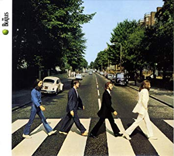

ABBEY ROAD

Publicado por primera vez el 26 de septiembre de 1969, Abbey Road fue el último álbum de los Beatles en ser grabado, pero no el último en ser lanzado. Let It Be, aunque grabado principalmente en enero de 1969.
Abbey Road ingresó a la lista de álbumes británicos en el número 1 en octubre y se quedó allí durante un total de diecisiete de sus 81 semanas en la tabla. En los EE. UU.
Los temas del album son: